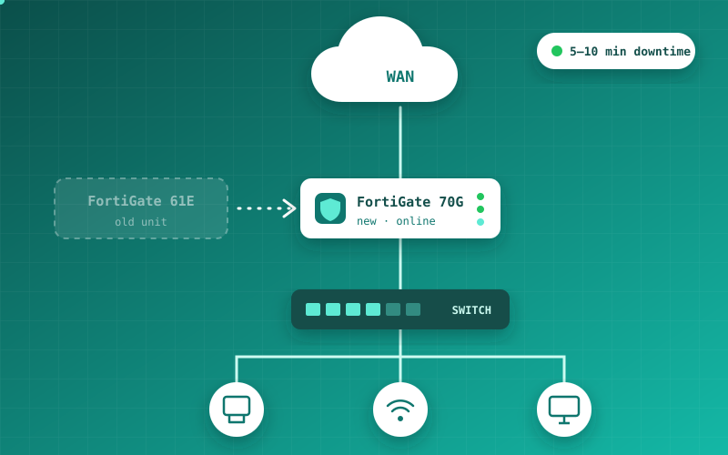

Featured · Synergy Global IT Solutions
FortiGate Firewall Migration
Replaced FortiGate 61E firewalls with 70G units on two live retail sites. Responsibilities covered preparing and updating the new devices, installing the hardware, and migrating WAN and switch connections. Each changeover was completed with only 5–10 minutes of planned downtime, and connectivity was verified with site staff afterwards.